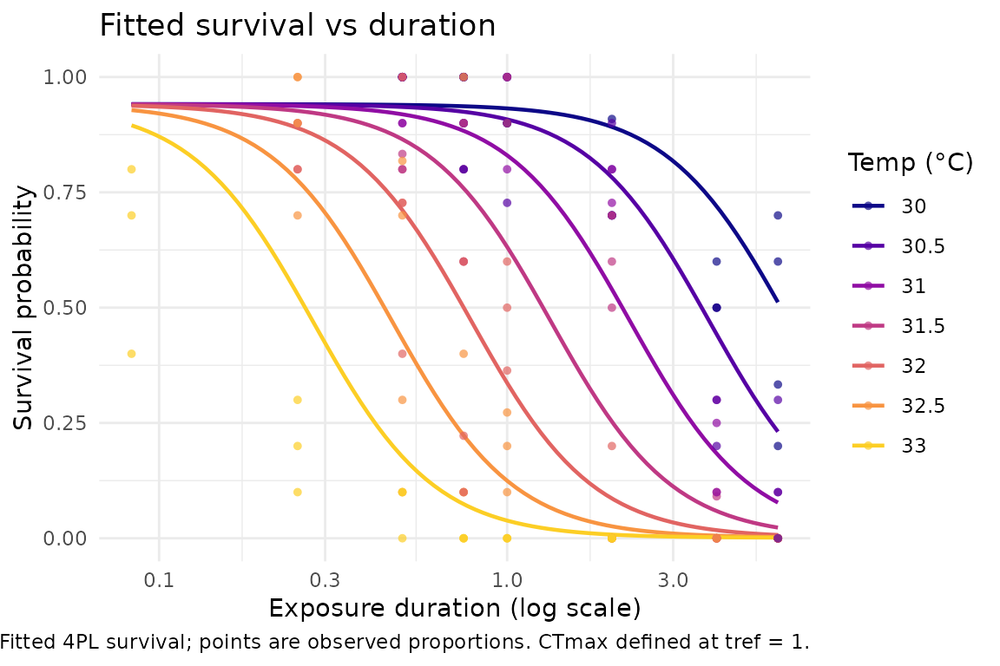
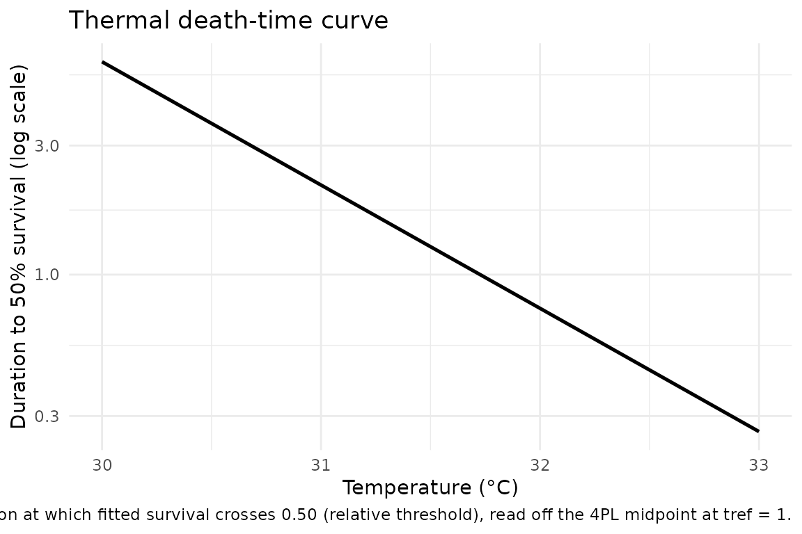

This article is a focused walk-through of one dataset: the brown
shrimp (Crangon crangon) lethal thermal-death-time (TDT) assay
vendored from bayesTLS.
It is written for an applied thermal-biology reader who wants to see the
whole freqTLS workflow end to end on a single, well-behaved
lethal dataset — fit, visualise, derive critical temperatures, and place
the result beside the Bayesian and classical two-stage estimates.
shrimp_lethal has 148 rows at seven
nominal assay temperatures (30–33 °C in 0.5 °C steps) crossed with
exposure durations from about five minutes to six hours. The survival
counts are reconstructed from the source CSV mortality
proportions: freqTLS multiplies each proportion by the
trial size and rounds, so
deaths = round(mortality_prop * total) and
survived = total - deaths (the “R-SHRIMP” reconstruction;
see ?shrimp_lethal).
The benchmark configuration is fixed throughout: reference time
tref = 1 hour, the relative mortality
threshold, a beta_binomial family, and a constant 4PL shape
(low, up, k shared across
temperatures). This is the matched configuration that locks all three
estimators to the same fitted curve
(docs/design/06-benchmark-protocol.md).
This article builds without Stan and renders fast.
The freqTLS fit runs live; the Bayesian and classical
two-stage numbers are read from a maintainer-built cache if it is
present. The two chunks copied verbatim from
vignette("comparing-to-bayesTLS") — the live shrimp fit and
the three-way table — are the parts already known to render Stan-free
with shrimp cached.
The live freqTLS fit
The freqTLS fit needs nothing beyond this package. We
standardise the raw assay table with standardize_data(),
fit the ungrouped shrimp 4PL by maximum likelihood with
fit_4pl(), and read profile-likelihood confidence intervals
for CTmax and z with tls().
data(shrimp_lethal)
shrimp_std <- standardize_data(
shrimp_lethal,
temp = "Temperature_assay", duration = "Duration_exposure_hours",
n_total = "N_individuals_after_trial", mortality = "Mortality_after_trial",
duration_unit = "hours"
)
shrimp_fit <- fit_4pl(shrimp_std, t_ref = 1, family = "beta_binomial", quiet = TRUE)
tls(shrimp_fit, method = "profile")$summary
#> # A tibble: 2 × 4
#> quantity median lower upper
#> <chr> <dbl> <dbl> <dbl>
#> 1 CTmax 31.8 31.6 31.9
#> 2 z 2.19 1.96 2.46CTmax lands near 31.8 °C and z near 2.2 °C,
each with a narrow asymmetry- respecting profile interval. Biologically,
z ≈ 2.2 °C is the temperature change that scales the
tolerated exposure tenfold: an exposure that is lethal in about an hour
at 31.8 °C would be lethal in ~6 minutes at 34.0 °C, or take ~10 hours
at 29.6 °C. A larger z would mean tolerance declines more
gradually with temperature; a smaller z, more steeply.
Seeing the fit
The Confidence Eye
The default freqTLS uncertainty visual is the
Confidence Eye: a confidence lens with a hollow point
estimate. It carries no prior and makes no probability statement about
the parameter — it is a likelihood confidence display, not a posterior
density.
plot_confidence_eye(shrimp_fit, parm = c("CTmax", "z"), method = "profile")
Survival curves
The fitted survival surface, drawn as one curve per assay temperature against exposure duration:
plot_survival_curves(shrimp_fit)
The thermal-death-time line
Collapsing the survival surface to the threshold gives the classical
TDT line — log exposure time at the mortality threshold against
temperature. Its slope is z and its position fixes
CTmax:
plot_tdt_curve(shrimp_fit)
Deriving critical temperatures
Because shrimp lethal TDT measures death, both critical-temperature
derivations are meaningful here. derive_ctmax() reads the
absolute temperature giving 50% survival at a one-hour exposure;
derive_tcrit() returns the rate-multiplier
T_crit (valid because this is a lethal endpoint).
c(
CTmax_50pct_1h = round(derive_ctmax(shrimp_fit, surv = 0.5, duration = 1), 2),
T_crit_rate1 = round(derive_tcrit(shrimp_fit, rate = 1), 2)
)
#> `T_crit` assumes a lethal endpoint; for sublethal data its steeper `z` makes it
#> implausibly low.
#> CTmax_50pct_1h T_crit_rate1
#> 31.73 27.39The 50%-survival critical temperature at one hour is about 31.7 °C;
the rate-multiplier T_crit is about 27.4 °C. These are
deterministic transforms of the fitted CTmax /
z, not new fits. (derive_tcrit() prints an
explicit lethal-endpoint caveat: on a sublethal endpoint the
z is estimated from a functional decline rather than death,
so feeding it into a lethal-damage accumulator can drive
T_crit to implausible values. Shrimp lethal TDT is a lethal
endpoint, so the value stands.)
The three-way comparison, with real numbers
The cache holds the maintainer-built bayesTLS
(posterior) and classical two-stage summaries; the freqTLS
column is computed live as this page renders. All three use the matched
configuration (beta-binomial, relative threshold, constant shape,
tref = 1 hour), so they target the same fitted
curve.
| Quantity | Two-stage (delta CI) | bayesTLS (95% CrI) | freqTLS (profile CI) |
|---|---|---|---|
| CTmax (°C) | 31.61 [31.33, 31.89] | 31.72 [31.59, 31.86] | 31.77 [31.63, 31.92] |
| z (°C / decade) | 2.06 [1.49, 2.64] | 2.18 [1.95, 2.44] | 2.19 [1.96, 2.46] |
The three estimators land on essentially the same CTmax
and z. The headline is the agreement between the two
interval-bearing model fits: the freqTLS profile
confidence interval and the bayesTLS
posterior credible interval nearly coincide — and the
freqTLS side is produced live, in milliseconds, with no
Stan. That is the complementary framing made concrete on one dataset:
under the matched configuration the likelihood and the posterior
summarise the same fitted curve, one prior-free and by
optimisation, the other with a prior and MCMC.
Boundary: what this case study does not cover
The shrimp assay in bayesTLS also includes a
sublethal time-to-knockdown endpoint — time until loss
of righting response. That is a time-to-event quantity with a different
likelihood, and it is a deliberate non-goal for
freqTLS, which fits the single binomial / beta-binomial
survival-count 4PL. For the sublethal knockdown analysis, see
bayesTLS.
Where to next: for a grouped fit, see the zebrafish
or aphid case study; to derive heat-injury / T_crit from a
fit, see vignette("heat-injury").